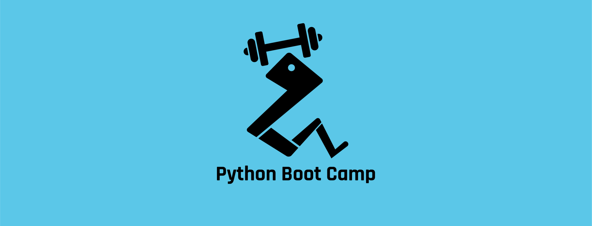
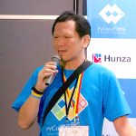
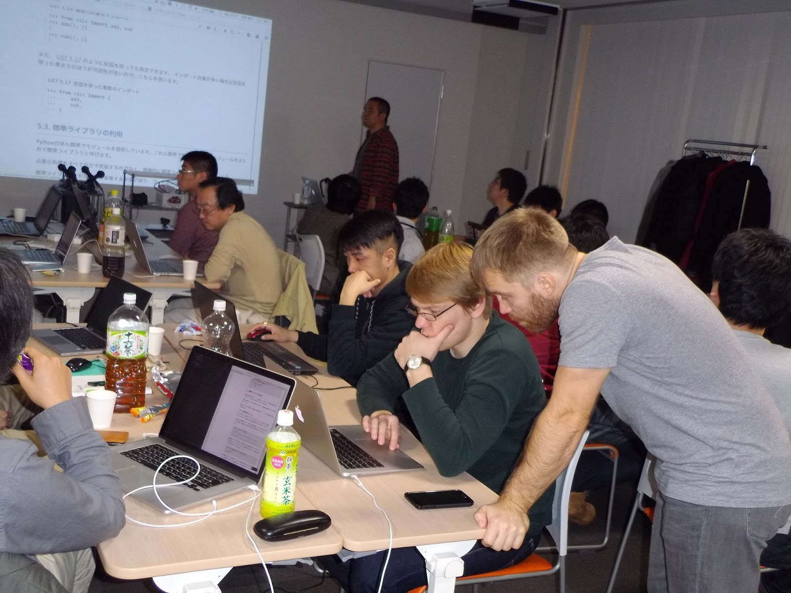
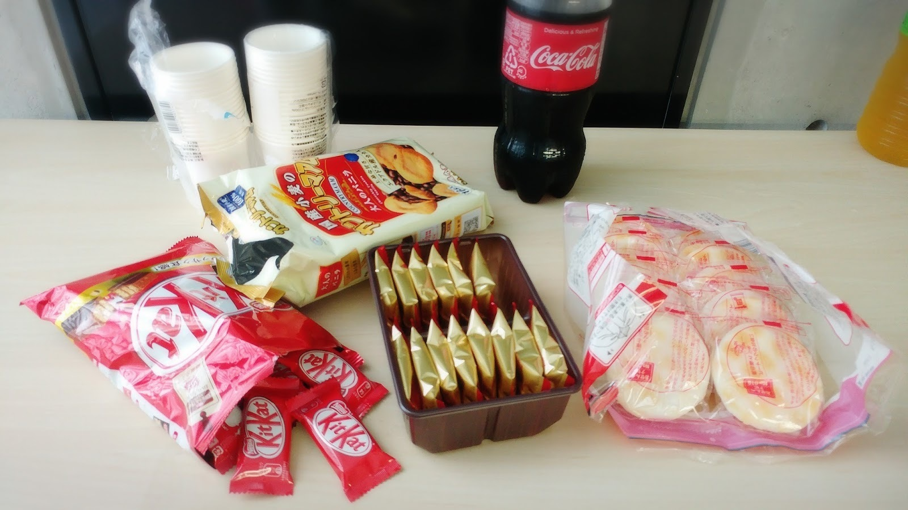
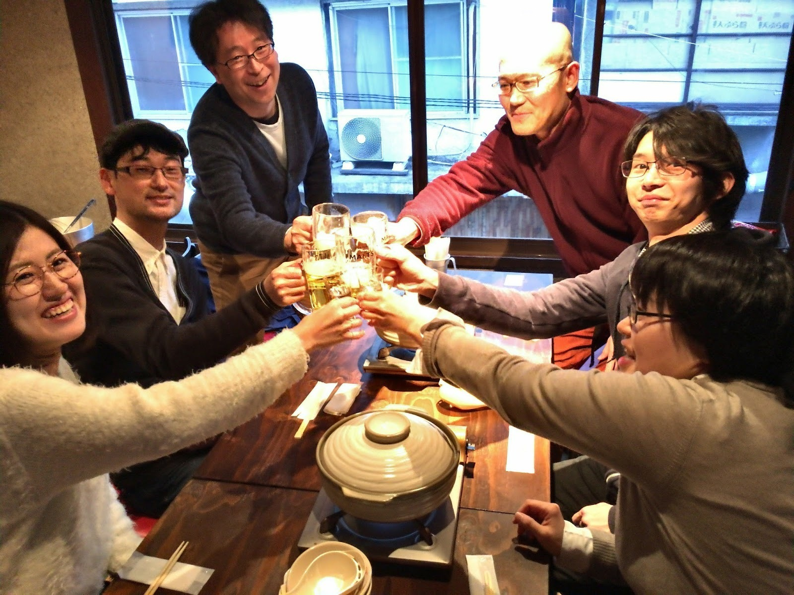
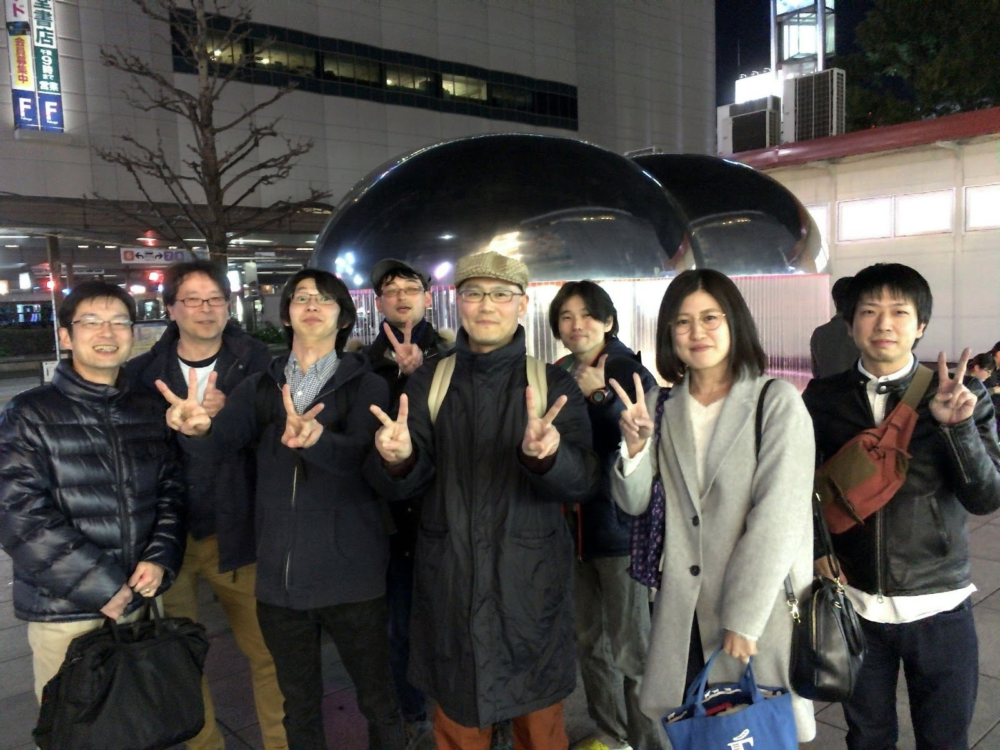

Python Boot Campで全国にPythonの環を広げよう！ #pycamp¶

Python Boot Campとは？¶
PyCon JPではこれまでも年に１回東京で開催されるPyCon JPイベントでPythonを学べるチュートリアル講座を開催してきました。 今回は、以下のような人たちにPythonを知ってもらえる機会を提供できたらという思いで、Python Boot Camp （略してPyCamp）を企画しました。
- 遠方に住んでいるためPyCon JPのチュートリアルに参加できずにいた方
- Pythonを使っている人が周りにいなくてなかなか始められなかった方
イベントの雰囲気をつかむには、以下サイトをチェックしてみてください。
- PyCon JPブログ 開催告知や開催後のレポートを公開しています。
- Python Boot Campテキスト チュートリアルで実際に使用されるテキストです。
ぜひ、以下問い合わせボタンから連絡してください！
運営メンバーの主な役割¶
| 運営スタッフ | 会場の手配、イベントの告知、スタッフ間のミーティング等、開催までに必要なタスクを実施する。 |
| 講師 | 開催時に参加者向けにチュートリアルを行う。 |
| TA（ティーチアシスタント） | チュートリアル中に参加者を個別にサポートする。 |
過去回運営メンバーの感想¶
運営スタッフ
運営スタッフとしてPythonを学ぶ方たちのサポートができ、やりがいと充実感を感じました。 講師やTA、コアスタッフの方とも気さくに話せ、準備から楽しく過ごすことができ、また参加したいです！
運営スタッフ
数年前からPythonに興味を持ち勉強を始めたものの、身近にPythonを使っている人があまりいなくて様子がわからず、ちょうど良い機会と思いPython Boot Campの現地スタッフとして手を挙げてみました。 初心者が大半でしたが、丁寧な説明により全員が最後まで手を動かして学ぶことができました。
TA
Python入門といってもその幅は広く、他言語の経験がある方もいればプログラミングが初めての方もいます。 Boot Campでは経験の少ない方をTAが手厚くサポートしますので、安心して参加できます。
TA
Python Boot Campに参加することは、まず第一に自分のPython力を振り返る良いきっかけになります。 また、日本のPythonコミュニティの運営話を聞いたり、これからPythonを学んでいく方々と交流したりと、Pythonに関するメタな情報に触れられる点も魅力の一つだと思います。
講師
TA
27名と多数の方に参加いただき、TA＆現地スタッフ5名体制でサポートしました。 おおむね参加者には満足してもらったようで良かったです。 講師のお話は私達TAが聞いていても大変勉強になりました。
現地スタッフ
当日は、講師・コアスタッフ・TAの協力もあり素晴らしいイベントになりました。 運営スタッフの仕事はマニュアルがありタスク化してあるので、それにそって準備をするだけで特に大変だということはありませんでした。 自分の地域でもやってみたいという方は運営スタッフとして応募してはいかがでしょうか。

講師プロフィール¶
Takayuki Shimizukawa
主な著書
ブログ・SNSのリンク
Takanori Suzuki
主な著書
ブログ・SNSのリンク

Manabu TERADA
Python Web関係の業務を中心にコンサルティングや構築を(株)CMSコミュニケーションズ代表取締役として手がけている。 一般社団法人PyCon JP Association 代表理事、一般社団法人Pythonエンジニア育成推進協会顧問理事など
主な著書
ブログ・SNSのリンク
Masataka Arai
東京大学文学部卒業、アライドアーキテクツ株式会社にて勤務。 2016年4月、株式会社SQUEEZEに入社。 コミュニティ活動として、PyCon JP 2015〜 2019 スタッフ、DjangoCongress JP 2018〜 スタッフ、Pythonもくもく会の主催など。 趣味はラクロスとPerfume。
主な著書
ブログ・SNSのリンク
開催中の写真¶

講師とTAがしっかり教えます

おやつもあります

開催後は懇親会！

みんなで記念撮影
よくある質問¶
参加したいけど実際にどんなことを教わるの？¶
運営スタッフはどんなことをするの？¶
- connpass イベント作成して公開
- お茶、お菓子購入
- 参加者への事前連絡告知（PyCon JPブログ、メーリングリストへの投稿など）
- 経費精算
- PyCon JPブログ での開催告知・開催後レポート
- 振り返りミーティング
開催までだいたい1～1.5ヶ月ぐらいかけて準備します。
講師ってどんなことをするの？¶
また、事前に予行練習を行ってフィードバックを受けることもできます。
TAってどんなことをするの？¶
Python Boot Campの参加者はPython初心者なので、初歩的な部分でつまづいて先に進めない人が時々います。 そういう時に講師が全員に目を配るのは難しいため、個別にサポートする役割としてTAがいます。
過去の開催回で集まった人数¶
過去の開催ではこのぐらいの人数が集まりました。一般社団法人PyCon JP メディアスポンサー からも開催告知をしてもらえます。
| 開催地 | 参加人数 |
|---|---|
| 京都 | 一般参加5人 |
| 愛媛 | 一般参加11人、学生1人 |
| 熊本 | 一般参加3人、学生5人 |
| 札幌 | 一般参加11人、学生6人 |
| 栃木小山 | 一般参加9人、学生1人 |
| 広島 | 一般参加13人、学生2人 |
| 大阪 | 一般参加13人、学生2人 |
| 神戸 | 一般参加17人、学生4人 |
| 長野 | 一般参加19人、学生8人 |
| 香川 | 一般参加12人、学生8人 |
| 愛知 | 一般参加32人、学生5人 |
| 福岡 | 一般参加29人、学生3人 |
| 長野八ヶ岳 | 一般参加14人、学生1人 |
| 鹿児島 | 一般参加17人、学生10人 |
| 静岡 | 一般参加10人、学生0人 |
| 新潟南魚沼 | 一般参加15人、学生6人 |
| 埼玉 | 一般参加31人、学生4人 |
| 神奈川 | 一般参加11人、学生1人 |
| 金沢 | 一般参加24人、学生2人 |
| 福島 | 一般参加14人、学生3人 |
| 柏の葉 | 一般参加30人、学生7人 |
| 岩手 | 一般参加14人、学生13人 |
| 茨城 | 一般参加14人、学生21人 |
| 徳島 | 一般参加13人、学生2人 |
| 京都 | 一般参加15人、学生7人 |
| 山形 | 一般参加10人、学生6人 |
| 山梨 | 一般参加8人、学生9人 |
| 岡山 | 一般参加13人、学生5人 |
| 仙台 | 一般参加17人、学生5人 |
| 静岡県藤枝市 | 一般参加20人、学生5人 |
| 和歌山 | 一般参加15人、学生1人 |
| 福井 | 一般参加8人、学生4人 |
| 山形市 | 一般参加12人、学生0人 |
| 岐阜 | 一般参加17人、学生0人 |
| 沖縄 | 一般参加10人、学生1人 |
| 高知 | 一般参加14人、学生9人 |
| 群馬 | 一般参加5人、学生3人 |
| 福岡2nd | 一般参加13人、学生5人 |
| 熊本2nd | 一般参加15人、学生0人 |
| 長崎 | 一般参加15人、学生3人 |
| 山口 | 一般参加6人、学生0人 |
| 佐賀 | 一般参加10人、学生6人 |